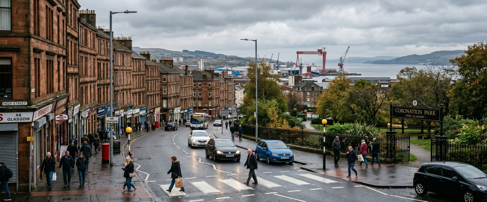
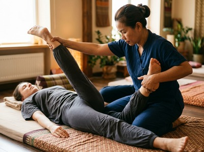

Coronation Park sits at the heart of Port Glasgow, a riverside green space overlooking the Firth of Clyde that has served the local community since 1937.

The surrounding area is home to families, working professionals, and long-term residents who make up the fabric of this close-knit Inverclyde town. If you have been searching for thai massage near Coronation Park, Thai Massage Greenock is just a short journey away on South Street in Greenock, offering authentic Thai therapy that is a world apart from a quick spa treatment.
Port Glasgow and Greenock sit side by side along the Clyde, and that proximity makes Thai Massage Greenock an entirely practical choice for anyone living or working near Coronation Park. The two town centres are connected by frequent bus services and a ScotRail line that covers the distance in around six minutes. Whether you finish work in the afternoon or want to make use of an evening slot, getting across to South Street takes very little time from this part of Inverclyde.

Port Glasgow has a proud industrial heritage rooted in shipbuilding, and many residents here are on their feet, on tools, or at a desk all day. That kind of physical and mental load builds up quickly. Regular massage therapy addresses the muscle tension, postural strain, and accumulated stress that come with that lifestyle. You can book your session online and have an appointment confirmed within minutes.
Thai Massage Greenock offers a full range of traditional Thai therapies, each delivered personally by Jariya Malone, a therapist trained at Bangkok's renowned Wat Po temple. Whether you need deep relief from muscle tension or a more restorative, calming treatment, there is an option suited to you.
From Coronation Park, the easiest route by public transport is the ScotRail train from Port Glasgow station to Greenock Central. The journey takes around six minutes, and the studio on South Street is a short walk from the station. There is also a dedicated Coronation Park bus stop on Greenock Road, served by McGill's routes including the 906, X22, and 531, all of which travel through to Greenock.
If you are driving, the A8 runs directly between Port Glasgow and Greenock and the journey takes under ten minutes in normal traffic. Street parking is available near South Street. For clients who prefer to combine their visit with other errands in Greenock town centre, the location is genuinely convenient.
Ready to make a start? Book your treatment online and choose the day and time that suits you best.
Jariya Malone is not a franchise therapist following a script. Her training at Wat Po in Bangkok, the birthplace of traditional Thai massage, gives her a depth of technique that is genuinely rare in this part of Scotland. Every client receives personalised treatment based on their specific needs, and Jariya keeps detailed notes between sessions so that each visit builds on the last.
Clients from across Inverclyde, including Port Glasgow, Gourock, and Kilmacolm, return regularly because the results are consistent and the care is personal. That is the difference between a one-off appointment and an ongoing relationship with a therapist who understands your body. Secure your appointment today and experience that difference for yourself.
Coronation Park opened in 1937 on the site of Port Glasgow's former West Harbour, created to mark the coronation of King George VI. It remains a central green space in the town, hosting the annual Comet Festival, which celebrates Port Glasgow's remarkable shipbuilding legacy, including the Comet, the first passenger-carrying steamship in Europe. Port Glasgow is the second-largest town in the Inverclyde council area and sits immediately to the east of Greenock. You can read more about its history at Port Glasgow on Wikipedia.
Thai Massage Greenock is located on South Street in Greenock, roughly three miles from Coronation Park in Port Glasgow. By train from Port Glasgow station, the journey to Greenock Central takes around six minutes, and the studio is a short walk from the station. By car along the A8, the drive typically takes under ten minutes.
There is a bus stop at Coronation Park on Greenock Road, served by several McGill's routes including the 906 Clyde Flyer and the X22, which travel through to Greenock. Alternatively, Port Glasgow train station is a short walk away, with ScotRail services to Greenock Central running regularly throughout the day. Both options make getting to South Street straightforward without a car.
For clients who are on their feet, working with their hands, or carrying physical strain from a demanding job, Traditional Thai Massage or Thai Sports Massage tend to deliver the most noticeable relief. Traditional Thai Massage works deeply on muscle tension and joint stiffness using acupressure and assisted stretching, while Thai Sports Massage focuses on recovery and injury prevention. Jariya will advise on the best option when you get in touch.
Same-day availability depends on the current schedule, so the best approach is to check the online booking form for the most up-to-date slots. If you need a specific time, booking ahead by a day or two is always recommended to avoid disappointment. Evening and weekend appointments are available for clients who cannot make daytime sessions.
Thai Massage Greenock operates appointments across a range of days and times, including evenings and weekends, to accommodate clients from across Inverclyde. The best way to check current availability is to visit the online booking form or call the studio on 01475 600868. Jariya works on an appointment basis, so sessions are not drop-in.